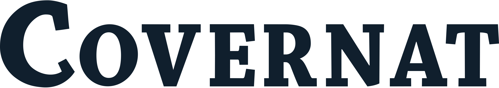

홈 > 브랜드 매거진 > Mexx
Mexx
멕스(Mexx)는 1986년 네덜란드에서 라탄 차다가 설립한 캐주얼 패션 브랜드이다.
산업 분야 패션·럭셔리 · 공개 등급 자료 기반 · 브랜드 평가 4.1 ★
한눈에 보는 브랜드
멕스는 네덜란드에서 출발한 글로벌 캐주얼 패션 브랜드다. 1986년 인도계 기업가 라탄 차다가 남성 라인 무스타슈와 여성 라인 에마뉘엘을 합쳐 만들었으며, 두 라인 앞 글자에 키스를 뜻하는 XX를 더해 이름을 지었다.
전성기에는 약 56개국 1,200여 개 매장, 임직원 6,500여 명, 연매출 약 10억 유로 규모로 성장했다. 그러나 2014년 12월 암스테르담 법원에서 파산이 선고되며 본사가 무너졌고, 이후 인수자를 거쳐 브랜드 자체는 재출범해 명맥을 잇고 있다.
창립, 글로벌 부상, 파산, 재출범이라는 굴곡을 모두 거친 사례다.
브랜드 관점
멕스의 본질은 1980~90년대 유럽 중가 캐주얼 시장에서 빠르게 글로벌화했다가, 2010년대 패스트패션 재편 속에서 위치를 잃고 무너진 뒤 상표권 중심으로 되살아난 흐름에 있다. 차다는 디자인·소싱·유통을 묶은 라이프스타일 전략으로 56개국까지 확장했지만, 2001년 미국 리즈 클레이본에 매각된 뒤 경영권이 사모펀드로 넘어가며 방향성이 흔들렸다.
자라·H&M으로 대표되는 저가 고속 회전 모델과 온라인 전환에 끼인 중간 가격대 브랜드의 전형적 곤경을 겪었고, 금융위기 이후 의류 소비 위축이 결정타가 됐다. 한국 독자에게 멕스는 1990~2000년대 백화점·편집 채널에서 익숙했던 유럽 캐주얼 브랜드이자, 한때 정상에 올랐던 브랜드도 시장 구조 변화 앞에서는 소유권만 남기고 사라질 수 있음을 보여주는 사례로 읽힌다.
브랜드 자산과 운영 역량은 별개라는 점이 핵심 함의다.
시작과 성장
멕스의 출발점은 의류 소싱과 유통이 빠르게 글로벌화하던 1980년대다. 인도에서 네덜란드로 건너간 라탄 차다는 무스타슈(남성)와 에마뉘엘(여성) 두 라인을 운영하다 1986년 이를 통합해 멕스를 세웠다.
같은 해 모든 것이 키스 같아야 한다는 취지의 캠페인이 호응을 얻으며 브랜드가 빠르게 알려졌다. 1990년대에는 키즈 라인과 유아·토들러 라인, 향수·가방·홈 카테고리로 확장하며 라이프스타일 브랜드로 성장했고, 독일을 시작으로 유럽 전역과 캐나다 등 북미로 매장을 넓혀 전성기에는 56개국 1,200여 개 매장에 이르렀다.
첫 번째 전환점은 2001년으로, 차다가 미국 리즈 클레이본에 브랜드를 매각하면서 창업자 시대가 사실상 막을 내렸다. 이후 2011년 경영권이 미국 사모펀드 측 합작법인으로 넘어갔고, 두 번째 전환점인 2014년 12월 네덜란드 본사 법인들이 파산 선고를 받으며 글로벌 운영이 붕괴했다.
브랜드 아이덴티티
멕스의 가치 핵심은 즐겁고 자유분방하며 낙관적인 라이프스타일 제안이다. 이름의 두 X는 키스를 상징하며 애정과 긍정의 정서를 담는다.
비주얼 아이덴티티는 간결한 워드마크와 절제된 색을 바탕으로 도시적이고 모던한 캐주얼 무드를 표현하고, 매장과 광고에서 밝고 경쾌한 톤을 일관되게 유지했다. 타깃은 도시적 감성을 가진 젊은 직장인과 가족 단위 소비자로, 남성·여성·아동 라인을 함께 구성해 폭넓은 연령대를 끌어안았다.
보이스는 격식보다 친근함과 개방성을 앞세워, 트렌디하면서도 부담 없는 데일리 패션이라는 인상을 전달한다.
제품과 서비스
취급 품목은 남성·여성·아동 캐주얼 의류가 중심이며, 1990년대 이후 향수, 가방, 홈 데코 등으로 카테고리를 넓혔다. 유통 채널은 전성기 56개국에 이르는 직영·가두 매장망과 백화점·도매 유통을 축으로 했고, 재출범 이후에는 자체 온라인몰을 포함한 디지털 채널이 중요한 판매 경로로 자리 잡았다.
현재 상태
브랜드 자체는 파산 이후 재출범해 운영을 이어가고 있다. 2015년 튀르키예 에로을루 홀딩이 약 2,100만 유로에 인수했고, 이후 2017년 네덜란드계 RNF 그룹으로 넘어갔다.
2024년에는 RNF 그룹이 네덜란드 HVEG 패션 그룹에 인수되어, 멕스 상표권은 HVEG 산하 RNF가 보유한다. 현재 본거지는 네덜란드이며, 온라인몰을 중심으로 캐주얼 패션 브랜드로 영업하고 있다.
구체적 매출·매장 수 등 세부 재무 지표는 미공개.
타임라인
정리된 연도형 이벤트가 없습니다.
BI/CI 변천사
함께 읽을 브랜드
 패션·럭셔리 · 편집 검수자라
패션·럭셔리 · 편집 검수자라자라는 패션을 예측하기보다 시장의 반응을 빠르게 읽고 다시 매장으로 돌려보내는 브랜드다. 트렌드를 길게 기획하는 대신 고객 반응과 유통 속도를 무기로 삼아, 패션을...
H&M(Hennes & Mauritz)은 스웨덴에 본사를 둔 다국적 패스트패션 의류 기업이다.

패션·럭셔리 · 자료 기반커버낫커버낫은 비케이브가 전개하는 한국의 아메리칸 캐주얼·스트리트웨어 브랜드다. 빈티지 의류를 현대적 감각으로 재해석한 데일리웨어를 중심으로, 간결하면서 강한 로고 운용과...
Au
Aurlands
패션·럭셔리 · 편집 검수AurlandsAurlands는 2019년에 기록된 Fashion 계열의 브랜드 아이덴티티 사례입니다. Heydays가 아이덴티티 작업의 디자이너로 기록되어 있습니다. 공개 섹션...
 패션·럭셔리 · 편집 검수Esprit
패션·럭셔리 · 편집 검수EspritEsprit는 1978년에 기록된 Fashion 계열의 브랜드 아이덴티티 사례입니다. John Casado, Tamotsu Yagi가 아이덴티티 작업의 디자이너로 기...
 패션·럭셔리 · 편집 검수디젤
패션·럭셔리 · 편집 검수디젤디젤(Diesel)은 1978년 렌조 로소가 이탈리아 브레간체에서 설립한 데님 중심의 컨템포러리 패션 브랜드다. 도발적이고 실험적인 디자인으로 데님 헤리티지를 재해석...
패션·럭셔리 · 자료 기반마르디 메크르디마르디 메크르디는 한 송이 꽃 그래픽을 시그니처로 내세운 한국의 신생 패션 브랜드다. 프렌치 무드의 캐주얼한 감성을 바탕으로 티셔츠와 니트를 중심으로 성장했으며, 젊...
패션·럭셔리 · 매거진 완성몽블랑몽블랑은 필기구를 기록의 도구에서 성취와 품격의 상징으로 끌어올린 브랜드다. 만년필은 기능 제품이지만, 브랜드가 축적한 이미지는 서명, 의사결정, 지적 권위 같은 장...